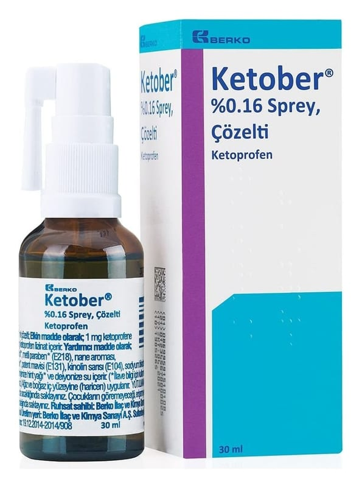

Ketober % 0.16 SPREY,15 ml

Ne için kullanılır
KT · Bölüm 1 KETOBER; şişenin içine daldırılmış PE kapiler boru ve doz ayarlı PP sprey başlıklı, amber renkli cam şişelerde (Tip III) pazarlanmaktadır.
Her bir karton kutu; 15 ml çözelti içeren 1 adet şişe içermektedir.
KETOBER, steroid yapıda olmayan (non-steroidal), yangı önleyici ve ağrı kesici etkin madde olan ketoprofen lizinat içermektedir.
KETOBER, aşağıdaki hastalıkların tedavisinde kullanılır:
- Ağız ve boğaz mukozasında iltihap (enflamasyon) ve ağrıyla seyreden diş eti iltihabı (gingivit), ağız içi iltihabı (stomatit), boğaz iltihabı (farenjit), bademcik iltihabı (tonsilit) ve pamukçuklarda (aftöz lezyonlar)
- Ağız ve boğazda mikroorganizmaların üremesinin durdurulması, yutma işlevinin rahatlatılması ve diş eti rahatsızlıklarında belirtilerin giderilmesinde
- Diş hekimliğinde işlemlerden sonra kullanılır.